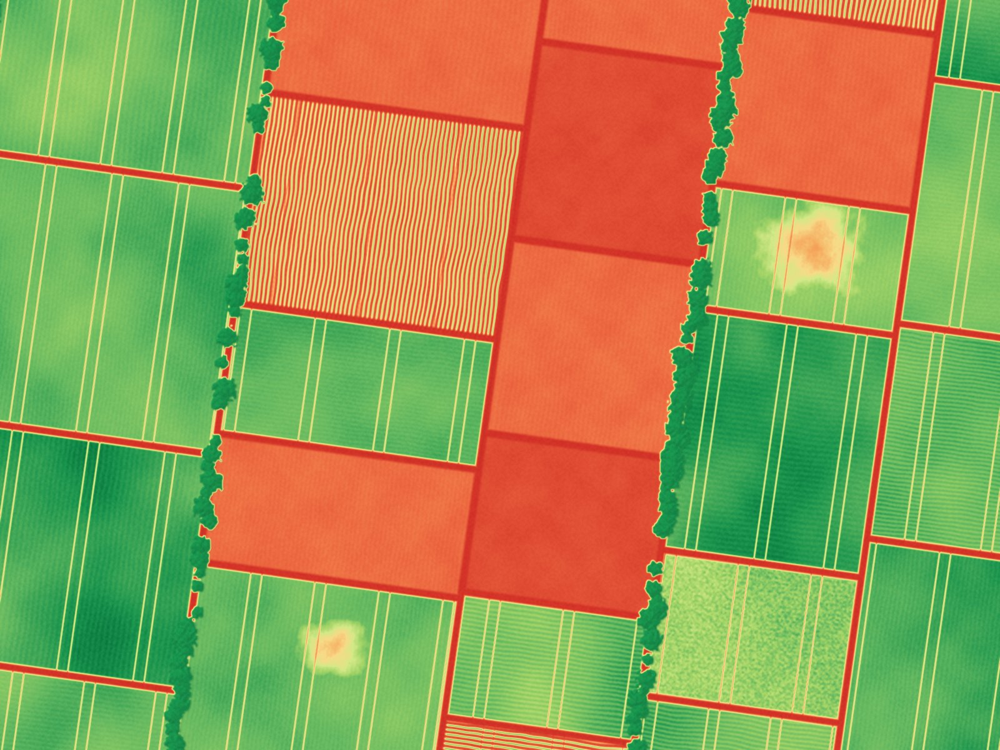

See crop stress before it shows.
MS flies the field in six bands and flags stress in the red edge and near infrared days before it shows in colour. Scout the patch, not the whole farm.
Watch it fly.
MS rides fixed and nadir under the Aviac VTOL and flies a lawnmower survey. The NDVI map builds behind the footprint, and stressed zones are pinned as they pass under the camera.


- Average NDVI0.71
- Flagged for scouting0.29 ac
- Bands per pixel6
- Processed in flightOn board
A stressed crop looks healthy until it is too late.
Chlorophyll loss shifts reflectance between 700 and 740 nm days before leaves change colour.
Leaf structure reflects strongly at 800 to 900 nm. Damage, disease and water stress pull it down.
By the time it shows in colour, the yield is already lost.
How it works.
From flight to a scouting task in four steps.
A fixed-wing or VTOL survey covers up to 1,000 acres in a flying day.
Six bands fire together: colour, red edge and near infrared.
NDVI and red-edge indices are computed on board, on the Jetson.
Stressed zones land in the dashboard as scouting tasks with a map pin.